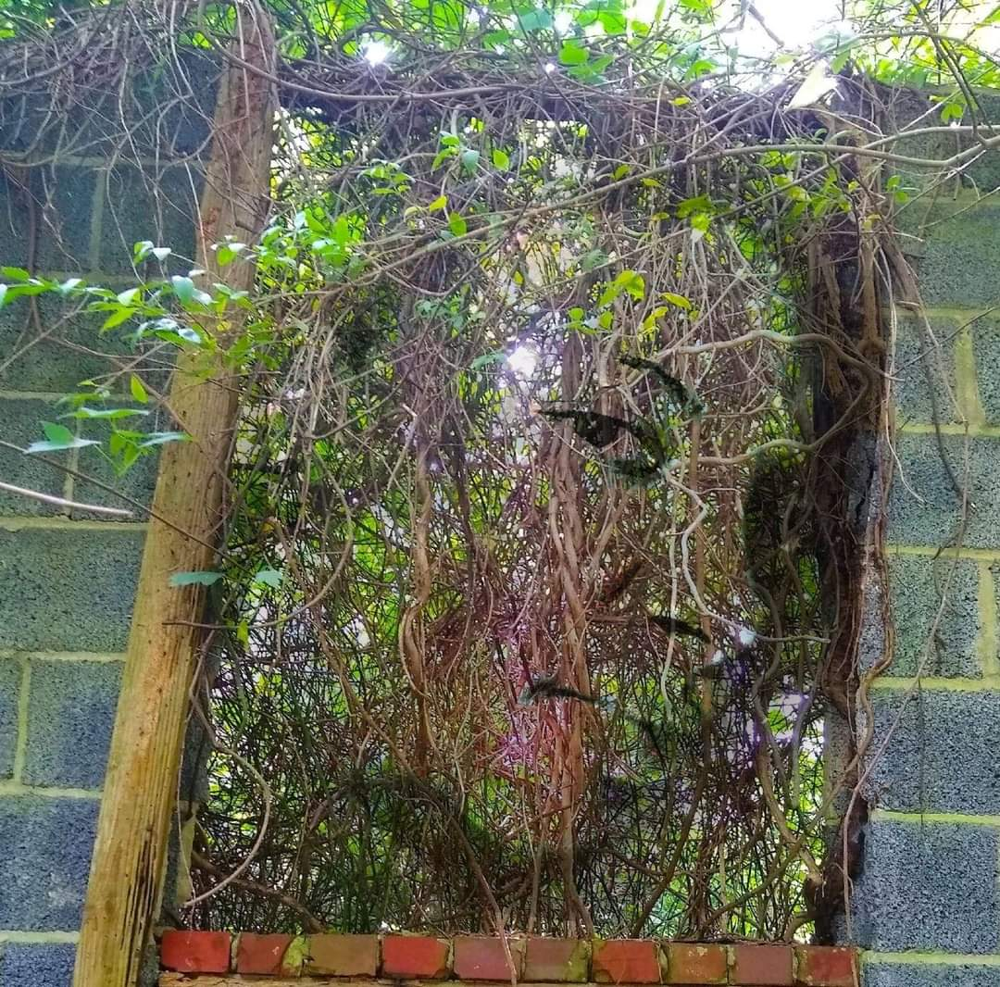

About Me
Art has always played a huge role in my life. As a child I would spend hours scribbling away in my notebooks, coloring books, and even homework. It was the one activity that I could focus on, truly giving 100% of my undivided attention to. Long before I knew what depression and anxiety, my happy place was creating art. It was the one way I could express myself without being judge or chastised for.
As I grew older my little scribbles evolved into sketches then into paintings. Soon after I was delving into other forms of art, beyond those you would create with pen and paper. This took form as music, cooking, and nail art. For a time, I felt content with my life even though my life wasn’t a happy or gratifying as my works. This all changed in middle school. It was hard for me to focus in class especially when the students that sat around me picked on me constantly for being a little different. I’ve always been considered as the “weird” girl or the “black sheep”. I never bothered me until then. It had gotten so bad that I would find any excuse to not go to school. Whenever I tried reaching out to family for help or guidance it was always “I’m being weak or overdramatic”, that “I’m too young to know what stress was”. Â I began to hate my life, to the point I wanted it to end. My only saving grace was my little sister, who would request for me to draw her favorite characters on her little whiteboard or to color.
After graduating from high school I wanted to go into fields that I knew would bring me joy like culinary arts and graphic design but my family never considered it a successful career choice. I enrolled at a university that they had chosen for me and a major that would fit their standards. This is when my mental health took a drastic decline. My mood swings became uncontrollable, and my impulsivity became dangerous. My only comfort being self-harm and alcohol. After dropping out during my junior year I began working as a chef assistant, giving me some fulfillment that I needed in my life. Due to low pay, and the stressers of working a minimum wage job I looked for better sources of income. I went back to school for Pharmacy Technology and worked in the field for 8 years until the decline in my mental health became too much. It got to the point that I had to be admitted to a physciatric facility. One thing that helped and is still helping me with my recovery is my art.

Photogarphy using Photoshop
Durham, NC, 27704
{kind=link}
{kind=link}